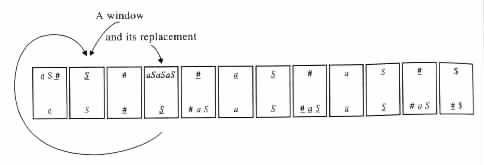
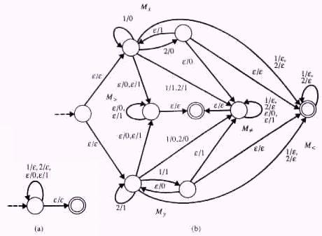

, X), for each symbol X
in S È N È {#}.
, X), for each symbol X
in S È N È {#}.
 e.
e.
The Undecidability of Post's Correspondence Problem
Applications of Post's Correspondence Problem
The Post's Correspondence Problem, or PCP for short, consists of the following domain and question.
with infinitely many cards in each pile, can one draw a sequence of n ³ 1 cards
from these piles, so that the string xi1 · · · xin formed on the top of the cards will equal the string yi1 · · · yin formed on the bottom?
The tuple (i1, i2, i3, i4, i5, i6) = (1, 3, 2, 4, 4, 3) is a witness for a positive solution because x1x3x2x4x4x3 = y1y3y2y4y4y3 = 01111001011111. The positive solution has also the witnesses (1, 3, 2, 4, 4, 3, 1, 3, 2, 4, 4, 3), (1, 3, 2, 4, 4,3,1,3,2,4,4,3,1,3,2, 4, 4, 3), etc. On the other hand, the PCP has the solution no for <(0, 10), (01, 1)>.
The Undecidability of Post's Correspondence Problem
Post's correspondence problem is very useful for showing the undecidability of many other problems by means of reducibility. Its undecidability follows from its capacity for simulating the computations of Turing machines, as exhibited indirectly in the following proof through derivations in Type 0 grammars.
Theorem 4.7.1 The PCP is an undecidable problem.
Proof By Corollary 4.6.1 the membership problem is undecidable for Type 0 grammars. Thus, it is sufficient to show how from each instance (G, w) of the membership problem for Type 0 grammars, an instance I can be constructed, such that the PCP has a positive solution at I if and only if w is in L(G).
For the purpose of the proof consider any Type 0 grammar G = <N, S, P, S> and any string w in S*. With no loss of generality assume that #, ¢, and $ are new symbols not in N È S. Then let the corresponding instance I = <(x1, y1), ¼, (xk, yk)> of PCP be of the following form.
PCP has a positive solution at I if and only if I can trace a derivation that starts at S and ends at w.
For each derivation in G of the form S Þ g1 Þ · · · Þ gm Þ w, the instance I has a witness (i1, ¼, in) of a positive solution such that either
or
depending on whether m is even or odd, respectively.
On the other hand, each witness (i1, ¼, in) of a positive solution for PCP at I has a smallest integer t ³ 1 such that xi1 · · · xit = yi1 · · · yit. In such a case, xi1 · · · xit = yi1 · · · yit = ¢S#g2#g4 · · · gm for some derivation S Þ* g1 Þ* g2 Þ* · · · Þ* gm Þ* w.
The instance I consists of pairs of the following form
, X), for each symbol X
in S È N È {#}.
e.
 $) as
a last pair, for each witness of a positive solution. The pair (¢S
$) as
a last pair, for each witness of a positive solution. The pair (¢S , ¢) in (a) is used to start the
tracing of a derivation at S. The pair ($,
, ¢) in (a) is used to start the
tracing of a derivation at S. The pair ($,  $) in (b) is used to end the tracing of a
derivation at w.
$) in (b) is used to end the tracing of a
derivation at w.
The other pairs are used to force the tracing to go from each given sentential form g to a sentential form g', such that g Þ* g'. The tracing is possible because each of the pairs (xi, yi) is defined so that yi provides a "window" into g, whereas xi provides an appropriate replacement for yi in g'.
The pairs of the form (X,  ) and (
) and ( , X) in (c) are used for copying substrings
from g to g'. The pairs of the form (b, ) and (, a), b
, X) in (c) are used for copying substrings
from g to g'. The pairs of the form (b, ) and (, a), b e, in (d) are used for
replacing substrings a in g by substrings b in g'. The pairs of the form (X, ) and
(
e, in (d) are used for
replacing substrings a in g by substrings b in g'. The pairs of the form (X, ) and
( , Xa) in (e) are used for replacing substrings a in g by the empty string e in
g'.
, Xa) in (e) are used for replacing substrings a in g by the empty string e in
g'.
The window is provided because for each 1 £ i1, ¼, ij £ k, the strings x = xi1 · · · xij and y = yi1 · · · yij satisfy the following properties.
 in x is equal to one plus the sum of the number of
appearances of # and
in x is equal to one plus the sum of the number of
appearances of # and  in y. Otherwise, there would be a least l > 1 for
which xi1 · · · xil and yi1 · · · yil do not satisfy the property. In such a case,
because of the minimality of l, xil and yil would have to differ in the number
of # and
in y. Otherwise, there would be a least l > 1 for
which xi1 · · · xil and yi1 · · · yil do not satisfy the property. In such a case,
because of the minimality of l, xil and yil would have to differ in the number
of # and  they contain. That is, by definition of I, (xil, yil) would have to
equal either ($, $) or (¢, ¢). However, ($, ) is an impossible choice
because it implies that xi1 · · · xil = yi1 · · · yil, and (¢, ¢) is an impossible
choice because it implies that xi1 · · · xil-1 = yi1 · · · yil-1 (and hence that the
property holds).
they contain. That is, by definition of I, (xil, yil) would have to
equal either ($, $) or (¢, ¢). However, ($, ) is an impossible choice
because it implies that xi1 · · · xil = yi1 · · · yil, and (¢, ¢) is an impossible
choice because it implies that xi1 · · · xil-1 = yi1 · · · yil-1 (and hence that the
property holds).
Example 4.7.2
If G is a grammar whose set of production rules is {S ® aSaSaS, aS ® e},
then the instance of the PCP that corresponds to (G, e) as determined by the
proof of Theorem 4.7.1, is <(¢S , ¢), (, S), (aSaSaS, ), (, #aS),
(#, ), (, aaS), (a, ), (, SaS), (S, ), (#,
, ¢), (, S), (aSaSaS, ), (, #aS),
(#, ), (, aaS), (a, ), (, SaS), (S, ), (#,  ), (, #), (a,
), (, #), (a,  ), (, a), (S, ),
(, S), ($,
), (, a), (S, ),
(, S), ($,  $)>.
$)>.
The instance has a positive solution with a witness that corresponds to the arrangement in Figure 4.7.1.
|

|
Applications of Post's Correspondence Problem
The following corollary exhibits how Post's correspondence problem can be used to show the undecidability of some other problems by means of reducibility.
Corollary 4.7.1 The equivalence problem is undecidable for finite-state transducers.
Proof Consider any instance <(x1, y1), ¼, (xk, yk)> of PCP. Let D be the minimal alphabet such that x1, ¼ , xk, y1, ¼ , yk are all in D*. With no loss of generality assume that S = {1, ¼, k} is an alphabet.
Let M1 = <Q1, S, D, d1, q0, F1> be a finite-state transducer that computes the relation S* × D*, that is, a finite-state transducer that accepts all inputs over S, and on each such input can output any string over D.
Let M2 = <Q2, S, D, d2, q0, F2> be a finite-state transducer that on input i1 · · · in
outputs some w such that either w xi1 · · · xin or w
xi1 · · · xin or w yi1 · · · yin. Thus, M2 on input
i1 · · · in can output any string in D* if xi1 · · · xin
yi1 · · · yin. Thus, M2 on input
i1 · · · in can output any string in D* if xi1 · · · xin yi1 · · · yin. On the other hand, if
xi1 · · · xin = yi1 · · · yin, then M2 on such an input i1 · · · in can output any string in D*,
except for xi1 · · · xin.
yi1 · · · yin. On the other hand, if
xi1 · · · xin = yi1 · · · yin, then M2 on such an input i1 · · · in can output any string in D*,
except for xi1 · · · xin.
It follows that M1 is equivalent to M2 if and only if the PCP has a negative answer at the given instance <(x1, y1), ¼, (xk, yk)>.
Example 4.7.3 Consider the instance <(x1, y1), (x2, y2)> = <(0, 10), (01, 1)> of PCP. Using the terminology in the proof of Corollary 4.7.1, D = {0, 1} and S = {1, 2}. The finite-state transducer M1 can be as in Figure 4.7.2(a),
|

|
M2 on a given input i1 · · · in nondeterministically chooses between its components Mx and My. In Mx it outputs a prefix of xi1 · · · xin, and in My it outputs a prefix of yi1 · · · yin. Then M2 nondeterministically switches to M>, M<, or M.
M2 switches from Mx to M> to obtain an output that has xi1 · · · xin as a proper
prefix. M2 switches from Mx to M< to obtain an output that is proper prefix of
xi1 · · · xin. M2 switches from Mx to M to obtain an output that differs from xi1 · · · xin
within the first |xi1 · · · xin| symbols.
to obtain an output that differs from xi1 · · · xin
within the first |xi1 · · · xin| symbols.
M2 switches from My to M>, M<, M for similar reasons, respectively.
The following corollary has a proof similar to that given for the previous one.
Corollary 4.7.2 The equivalence problem is undecidable for pushdown automata.
Proof Consider any instance <(x1, y1), ¼, (xk, yk)> of PCP. Let S1 be the minimal alphabet such that x1, ¼ , xk, y1, ¼ , yk are all in S1*. With no loss of generality assume that S2 = {1, ¼, k} is an alphabet, that S1 and S2 are mutually disjoint, and that Z0 is a new symbol not in S1.
Let M1 = <Q1, S1 È S2, S1 È Z0, d1, q0, Z0, F1> be a pushdown automaton that accepts all the strings in (S1 È S2)*. (In fact, M1 can also be a finite-state automaton.)
Let M2 = <Q2, S1 È S2, S1 È Z0, d2, q0, Z0, F2> be a pushdown automaton that
accepts an input w if and only if it is of the form in · · · i1u, for some i1 · · · in in S1* and
some u in S2*, such that either u xi1 · · · xin or u
xi1 · · · xin or u yi1 · · · yin.
yi1 · · · yin.
It follows that M1 and M2 are equivalent if and only if the PCP has a negative answer at the given instance.
The pushdown automaton M2 in the proof of Corollary 4.7.2 can be constructed to halt on a given input if and only if it accepts the input. The constructed pushdown automaton halts on all inputs if and only if the PCP has a negative solution at the given instance. Hence, the following corollary is also implied from the undecidability of PCP.
Corollary 4.7.3 The uniform halting problem is undecidable for pushdown automata.
PCP is a partially decidable problem because given an instance <(x1, y1), ¼, (xk, yk)> of the problem one can search exhaustively for a witness of a positive solution, for example, in {1, ¼, k}* in canonical order. With such an algorithm a witness will eventually be found if the instance has a positive solution. Alternatively, if the instance has a negative solution, then the search will never terminate.